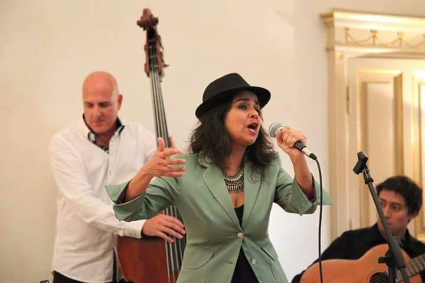

Monserrat è nata in Cile e vive in Italia dall’età di 5 anni, è cantante, educatrice musicale, insegnante accreditato Audiation Institute, educatrice Cemea, mediatrice culturale, formatrice, si dedica alla scrittura, all’illustrazione e al teatro; in sintesi alla promozione del benessere delle persone di qualsiasi età attraverso la pratica dei linguaggi artistici.
Si è formata presso il Liceo Classico P. Albertelli, l’Istito Jean Piaget, entrambi a Roma, presso il Conservatorio Licino Refice di Frosinone ed ha frequentato corsi di specializzazione in didattica musicale per l’infanzia e numerosi seminari di approfondimento in ambito musicale, artistico ed educativo.
Ha studiato tecnica vocale con le docenti Susan Long, Elisabeth Aubrie, Katarina Krueger e Sara Della Porta. Ha studiato sassofono con il maestro Francesco Marini.
Presso il Conservatorio Licino Refice ha studiato canto jazz con le docenti Carla Marcotulli e Giuppi Paone, arrangiamento con il maestri Marco Tiso e Roberto Spadoni, pianoforte complementare con il maestro Alberto Girardi, storia del Jazz con il professor Luigi Onori, improvvisazione con il maestro Paolo Tombolesi, armonia con il maestro Stefano Caturelli. Ha frequentato i corsi di formazione per insegnanti di musica ” L’Educazione musicale del bambino da 0 a 6 anni, secondo la Music Learnin Theory del prof. E. Gordon”, ass. Aigam e ” L’Educazione musicale dai 6 ai 12 anni - l’istruzione formale secondo la M.T.L.”, ass. Aigam, entrambi riconosciuti dal MIUR.
Ha seguito presso il Conservatorio Licino Refice i seminari di Didattica del Canto Corale - Lucio Ivaldi; Songwriting - Stefano Scatozza; Vocal Summit - Susanna Stivali; Tecnica Vocale ed Improvvisazione non idiomatica - Gianna Montecalvo.
Ha frequentato in varie sedi i seguenti seminari: Rimica Dalcroze - Luisa Disegni, SIEM; Espressione Corporea nell’ambito della didattica Dalcroze - Susanne Martinet, SIEM; Improvvisazione Scat - Bob Stoloff, Umbria Jazz; Improvvisazione Jazz - Sara della Porta, Susanna Stivali, Elisabetta Antonini, Roma Summer Jazz Worhshop 2017, Centro Ottava; Ha studiato teatro-danza con la coreografa Flavia della Lunga e con la regista Cristine Cibils (Living Theatre).
É Assistente di Comunità Infantili, ha seguito il percorso di Educatrice Cemea, si è formata ed ha lavorato come Assistente al Puerperio presso l’ass. Il Melograno e nel reparto di patologia neonatale dell’Ospedale San Camillo di Roma nell’ambito del progetto dalla Regione Lazio “Raggiungere gli irraggiungibili”, finalizzato all’assistenza domiciliare dei nuclei con neonati prematuri ed a rischio psicosociale. Ha frequentato il corso di formazione “Fondamenti della pedagogia interculturale e modalità di comunicazione ed integrazione nel gruppo”, ass. Suamox.
Da 20 anni tiene laboratori di educazione musicale e dirige cori infantili presso asili nido, scuole dell’infanzia, scuole primarie e scuole di musica.
Attualmente insegna ai bambini presso la Scuola Popolare di Musica del Tiburtino, le scuole dell’infanzia In crescendo, Il paese delle meraviglie, Il Carosello, gli asili nido Cocchi di mamma e Il Girotondo, ed insegna canto ai ragazzi ed agli adulti presso la Scuola Popolare diMusica del Tiburtino; tutte le strutture citate si trovano a Roma e provincia.
É un’insegnante accreditato Audiation Institute, associazione che si occupa di promuovere la ricerca scientifica, lo studio e la diffusione sia del modello teorico della Music Learning Theory di Edwin E. Gordon sia degli approcci educativi e delle pratiche didattiche che si fondano su di essa.
É membro di ESCOM-Italy, European Society for the Cognitive Sciences of Music.
Fa stabilmente parte del trio “Di concerto con Mamma e Papà”, ensemble vocale e strumentale che realizza da anni una stagione di lezioni-concerto a Roma per i bambini da 0 a 5 anni, si è esibito al convegno Musica Presto, Bologna, ed alla Meryc Conference 2019, Ghent, Belgio.
Monserrat scrive canzoni, poesie e favole per grandi e piccini ed utilizza questi materiali originali per i propri laboratori e performances.
Ha recentemente prodotto il disco per bambini “l’Isola di Tiritinlallà”, per il quale ha scritto la storia, le canzoni e realizzato le illustrazioni.

É stata membro del gruppo vocale “Gordon Ensemble”, ed ha cantato nei concerti per l’infanzia “Che grandi orecchie che ho”, ass. Aigam, Auditorium Parco della Musica.
Ha fatto parte di diverse formazioni musicali con le quali ha approfondito il repertorio della canzone d’autore e del folklore cileni e latino americani.
Ha fondato e dirige “Avenidamerica”, quartetto a cavallo tra latin-folk, jazz e musica classica, con il quale ha pubblicato l’album “Avenidamerica, dedicado a Violeta” con il patrocinio dell’Ambasciata del Cile in Italia e dell’istituto IILA; il quartetto si è esibito nei musei romani Pietro Canova, Bilotti e Palazzo Braschi, all’Istituto IILA, presso la Casa delle Culture di Velletri - rassegna “Chi ti ha toccato il corpo con la mente”, nel Palazzo Baronale di Sipicciano - mostra “Neruda-Italia”, presso l’Auditorium Parco della Musica, ospite durante la presentazione del volume “20 anni di 68”, Club Tenco - Squilibri Editore.
Ha collaborato come cantante con l’artista Fernanda Pessolano nel contesto dell’installazione STRAP, e in performances di tetro-natura realizzate per il sistema bibliotecario ceretano sabatino. Attualmente porta avanti il monologo teatrale “Amancay, una donna con la guerra dentro”, scritto da Ermanno Dodaro.
Ha fatto parte della compagnia di teatro urbano, “Teatro della Contaminazione”, diretta dalla regista argentina Cristine Cibils (Living Theatre).
Collabora con i Cemea del Mezzogiorno (Centri di Esercitazione dell’Educazione Attiva) operando nei corsi di formazione permanente rivolti ai docenti degli asili nido e delle scuole dell’infanzia e lavorando presso le “Case delle Arti e del Gioco”; con i Cemea ha progettato e realizzato interventi ludico-didattici presso l’Auditorium Parco della Musica in occasione del Festival Russo, Festival Scandinavo, la mostra “Universi Sensibili” e nella stessa sede durante le attività promosse dal Comune di Roma nell’ambito del progetto “Città come Scuola”.
Ha lavorato per Caritas (Forum per l’Intercultura) portando nelle Scuole dell’infanzia e nelle Scuole primarie, “Volando sulle ali del racconto”, laboratorio di musica e cultura latino americane.